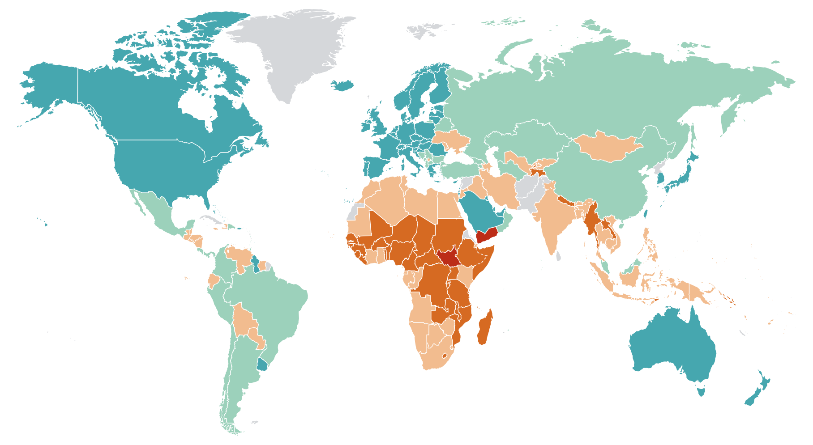

Dubawa
Fact-checking and verification journalism for West Africa.


Are Okadas responsible for 10,000 accidents?

Nigeria’s Per Capita Income vs China

Jonathan’s FDI claims fact-check

Did Gates Foundation promise to pay Nigeria’s debt?

Educational qualifications for presidents

Sports Minister medal claim fact-check